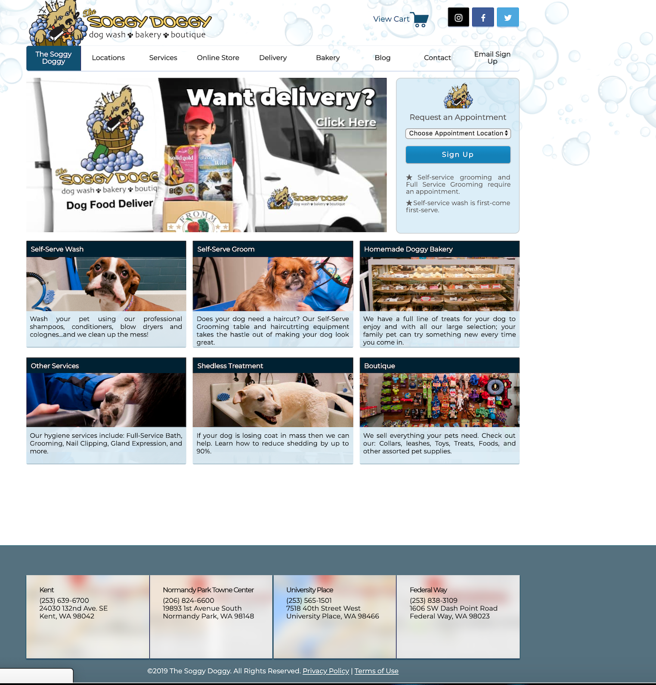
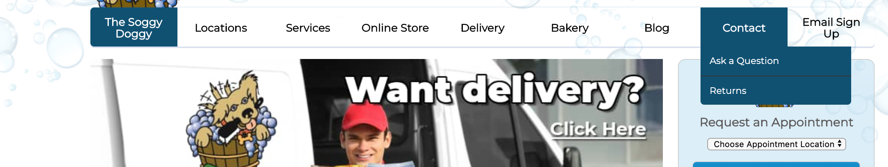
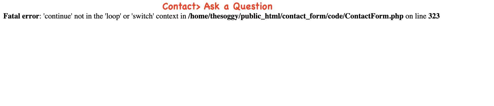
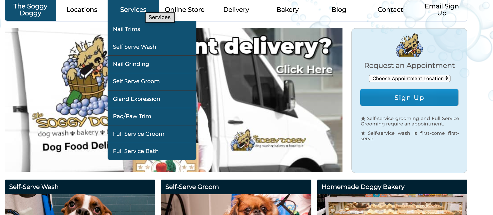
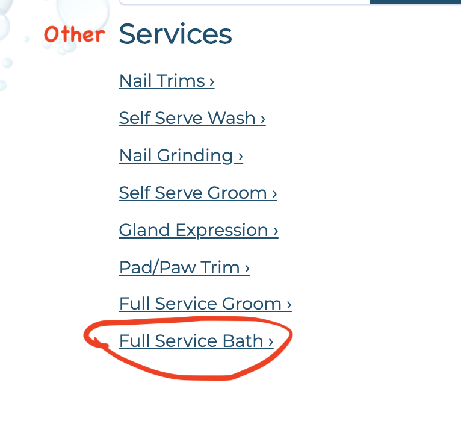
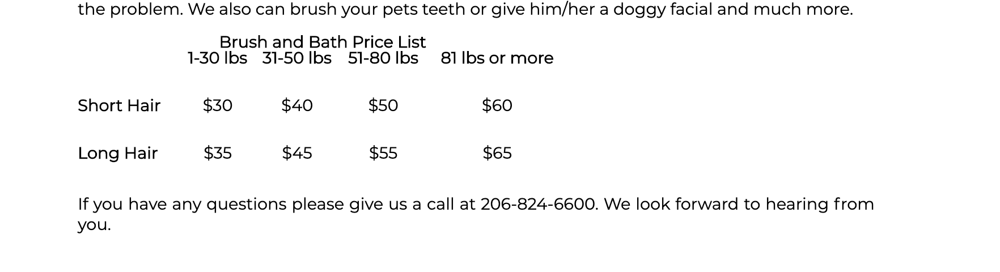
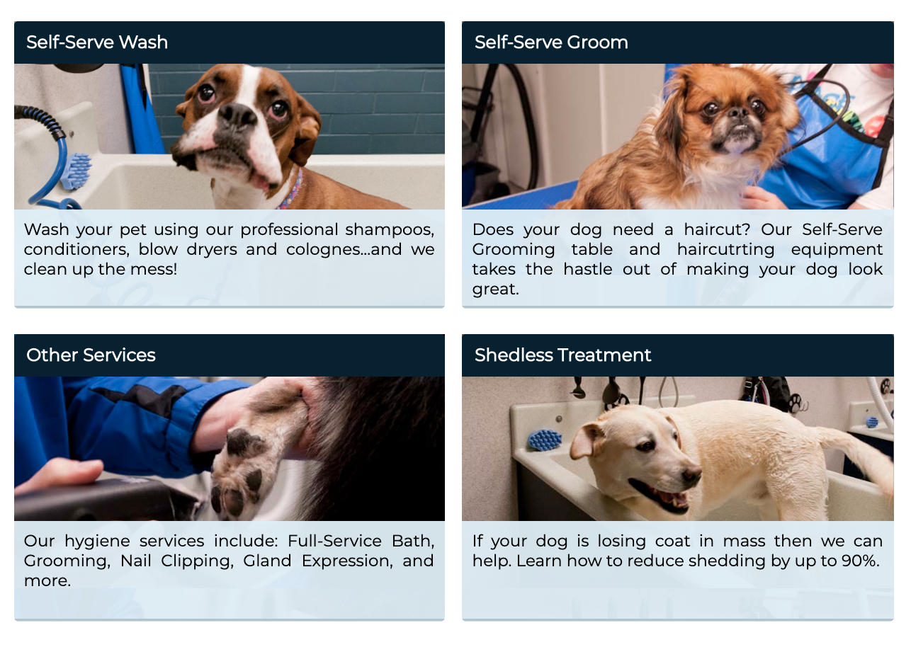

Usability Test
Welcome back to my blog!
This week was a special one, I had the help from 3 friends a.k.a testers, accomplish a Usability test, while I sat back and collected data. I asked all my testers the same questions relating to a site’s functionality and accessibility for further review on its performance. I need to see how easy or hard it was for them to find the answers to my questions. With each tester experience, I will gain knowledge to learn if the site makes sense or needs further improvements to be more user-friendly.
Let’s begin!! But first, let’s meet the testers!!!
Ryan (my husband)
- What line of work do you do?
- How often are you on the computer or surfing the web?
- Would you rather go shopping online or in a store?
Special forces in the Air Force.
Almost daily.
Store.
Amanda (my neighbor)
- What line of work do you do?
- How often are you on the computer or surfing the web?
- Would you rather go shopping online or in a store?
I work at the bank as a teller.
Everyday.
I perfer both, but mostly online.
Evie (friend)
- What line of work do you do?
- How often are you on the computer or surfing the web?
- Would you rather go shopping online or in a store?
I'm a stay at home mom, but I was working as customer service at the BX on base.
I'm on my phone all the time surfing the web, so yeah, like everyday!
In the store if I am shopping for clothes, any other stuff its online. It's easier.
The Website
This website is a one-stop shop for all pet lovers. They provide grooming, bakery goods/food deliveries and an online store for your dog food needs. It is a local business with several locations.
The Tasks
- Can you locate the Grooming price list?
- Can you locate the Store hours?
- Can you find how you would contact the store?
The Results
- Ryan
- Amanda
- Evie
In his attempts to answer the questions, he used the navagation for guidance. He did not stray from it, it took Ryan 2 minutes and 11 seconds to locate the grooming prices. He relied solely on the nav sections for help, when he could not find his answers he started to get annoyed. Especially when the contact page had an error, he did not know how to proceed from there.  
She used the services section in the navigation first to find her prices, but oddly enough did not click on any of the grooming options. She studied the homepage for awhile reading through the massive amounts of content until she clicked on "Other Services". From there she saw the link Full Service Bath, she found this list in 1 minute and 19 seconds.
  Evie found the answers relatively fast, she did stumble finding the grooming prices, like the other testers. She found the prices in 58 seconds! When she saw that the contact page had an error she quickly scrolled to the bottom of the page and found the phone numbers, like she did with the store hours.
Summary
It is clear to me, this site needs a remodeling! There needs to be a section for Grooming, including on that page a list of pricing. Too much content on a homepage can get discouraging and can push users to look for other services. The homepage has too much content for one set of eyes to handle, it should only provide it's main purpose.
My testers did a great job helping me determine improvements needed for this site. Starting with the homepage, sections such as the self-serve wash, self-serve groom and shedless treatment needs to be consolidated into one Grooming section. In doing so, they are giving the readers exactly what they want to know, that is how much and what grooming services are provided.
